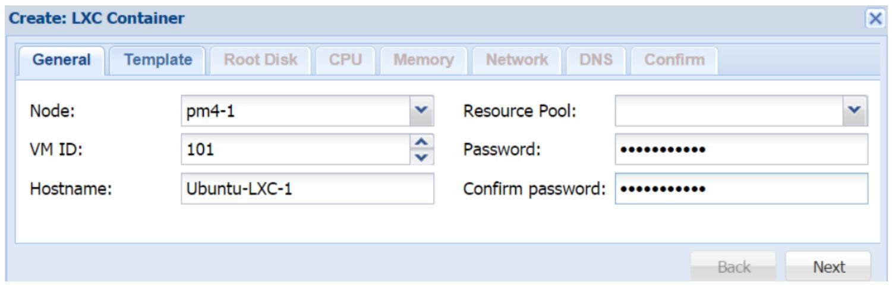
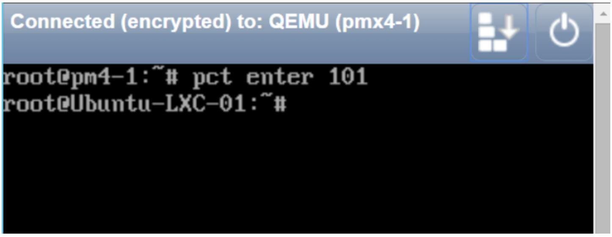

Глава 6. Виртуальные машины LXC
Содержание
Глава 6. Виртуальные машины LXC
Подгонка ресурсов прямым изменением
Сопоставление непривилегированных и привилегированных контейнером LXC
Создание непривилегированных контейнеров с правами root
Проверка процессов контейнеров
Начиная с Proxmox VE 4.0, технология контейнеров OpenVZ была заменена в пользу контейнеров LXC. В данной главе мы рассмотрим функциональность и преимущества использования контейнеров LXC, а также изучим как создавать контейнеры и управлять ими в Proxmox. В этой главе мы охватим следующие темы:
Контейнеры являются другой формой виртуальных машин, которая полностью зависит от операционной системы узла своего хоста. Контейнеры являются виртуализацией на основе ядра, которая совместно использует операционную систему своего хоста, тем самым, уменьшая накладные расходы, которые имеет виртуальная машина KVM. Благодаря более низким накладным расходам, плотность виртуальных машин на узел может быть сжата и может быть размещено больше контейнеров чем виртуальных машин KVM. Это происходит за счёт стоимости меньшей изоляции виртуальной машины. Поскольку контейнеры зависят от лежащей в их основе операционной системы, {в Proxmox} могут существовать только контейнеры на основе Linux. Никакая операционная система Windows не может быть заключена в контейнер. {Прим. пер.: В принципе, никто не ограничивает вас в запуске KVM с Windows Server 2016 с последующим запуском в нём контейнеров Windows. См. рекомендации по настройке Вложенного виртуального кластера.} В отличие от виртуальных машин KVM мы не можем клонировать контейнер или превратить контейнер в шаблон. Каждый контейнер является виртуальным экземпляром, который работает отдельно.
LXC является просто иным типом технологии контейнеров. OpenVZ является ещё одной технологией контейнеров, которая применялась в Proxmox вплоть до версии 4.0. Существует два основных различия между технологиями контейнеров LXC и OpenVZ:
Ниже приведены некоторые преимущества использования контейнеров LXC:
В Proxmox LXC контейнеры идентифицируются уникальной иконкой в инструментальной панели GUI. Следующий снимок экрана отображает иконку выключенного контейнера LXC с ID#100:
Рисунок 1
|
Замечание | |
|
Отметим, что Proxmox VE 4.0 был замещён версией 4.1, в которой впервые были введены LXC. Некоторые начальные проблемы в версии 4.0 были вызваны контейнерами, которые полностью были разрешены в Proxmox VE 4.1. Если вы используете Proxmox VE 4.0, очень важно обновиться до версии 4.1 прежде чем предпринимать какие бы то ни было попытки использования контейнеров LXC. |
В отличии от виртуальных машин KVM, которые могут быть установлены из образов ISO, контейнеры LXC могут быть развёрнуты только с применением шаблонов контейнеров. Эти шаблоны могут быть напрямую загружены из репозитория Proxmox. Для просмотра списка уже загруженных доступных шаблонов, нам нужно выбрать подключённое хранилище, которое может хранить шаблоны контейнеров, и кликнуть на его закладку Content, как это отображено на снимке экрана ниже:
Рисунок 2
На предыдущем снимке экрана мы можем видеть, что у нас имеется шаблон контейнера Ubuntu, который уже загружен в наше локальное хранилище. Для просмотра списка доступных шаблонов LXC и для их загрузки из репозитория Proxmox нам нужно кликнуть на меню Templates для открытия блока диалога, как это отображено наследующем экранном снимке:
Рисунок 3
Существует более 100 шаблонов доступных для загрузки из этого блока диалога. Если у вас нет возможности увидеть весь список и он отображает только шаблоны Section: system, тогда выполните следующую команду в CLI для обновления списка шаблонов:
# pveam update
Чтобы загрузить некий шаблон, просто выберите его и кликните по кнопке Download. Загруженный шаблон теперь будет доступен в вашем хранилище. Местоположение для хранения шаблонов контейнеров по умолчанию для локального хранилища следующее:
/mnt/pve/<storage>/template/cache
Местоположение по умолчанию для хранения шаблонов контейнеров для совместно используемого хранилища таково:
/var/lib/vz/template/cache
После того, как мы убедились что имеем нужный нам шаблон для желаемого контейнера, сейчас самое время создать его. Мы можем кликнуть на кнопку Create CT в правом верхнем углу GUI Proxmox для открытия блока диалога создания контейнера, как это отображено на снимке экрана ниже:
Рисунок 4

Общая закладка нашего блока диалога используется для назначения информации идентификации, как это очерчено ниже.
Node
Это ниспадающий список используемый для выбор на каком узле Proxmox требуется создать контейнер. В нашем примере мы создадим контейнер на узле pm4-1.
VM ID
Это текстовый блок используемый для ввода численного идентификатора нашего контейнера. Мы также можем воспользоваться стрелки вверх и вниз в нашем блоке для назначения этого идентификатора. Если мы назначили идентификатор который уже существует в нашем кластере, наш блок покажет красную рамку вокруг этого текстового блока. Для нашего примера контейнера мы используем идентификатор #101
Hostname
Это текстовый блок, применяемый для ввода имени хоста нашего контейнера. Имя хоста не требует определения в виде FQDN.
Resource Pool
Данное меню ниспадающего списка применяется для выбора созданного ранее пула. Оно необходимо только если нам нужно назначить контейнер опредлённому пулу.
Эта закладка используется для выбора шаблона того контейнера на базе которого он будет основан. Выберите Storage из ниспадающего меню в котором хранится шаблон, а затем из ниспадающего списка Template выберите необходимый вам шаблон как это отображается на следующем снимке экрана:
Рисунок 5
Эта закладка используется для определения вашего вашего пространства, которое может использовать данный контейнер. Следующий снимок экрана отображает блок диалога с настройкой для примера нашего контейнера при выбранном хранилище RBD Ceph:
Рисунок 6
Контейнеры LXC могут сохраняться во всех типах хранилищ без каких- либо изменений лишь с одним исключением для хранилища RBD Ceph. KRBD должен быть разрешён для хранилища RBD для хранения контейнера LXC. Вовлечение этого параметра теперь позволит усиление использованием распределённого хранилища в качестве платформы контейнеров LXC. Следующий снимок экрана показывает опцию KRBD в блоке диалога вашего хранилища:
Рисунок 7
Эта закладка делает возможной настройку виртуальных CPU для контейнера. Снимок экрана, приводимый ниже, отображает блок диалога с доступными опциями ЦПУ:
Рисунок 8
CPU limits
В отличие от виртуальных машин KVM, мы можем выделять только ядра ЦПУ, но не разъёмы ЦПУ. Предел ЦПУ ограничивает контейнеры в том, сколько ядер этот контейнер может использовать. В нашем примере контейнера мы выделяем 1 ядро ЦПУ.
CPU units
Проще говоря, данное значение применяется для определения того сколько процессорного времени данный контейнер может использовать, либо иметь в процентах от совместного использования. Когда мы смотрим на саму величину, она сама по себе не имеет значения. Однако, когда мы ведём рассуждения в терминах множества контейнеров, истинное значение наполняется смыслом. Например, представим себе кластер с 10 контейнерами LXC, причём каждый имеет по 1024 единицы ЦПУ. В данном сценарии все ваши контейнеры получат 100% времени ЦПУ, поскольку все имеют одно и то же значение единиц ЦПУ. Если мы, скажем, изменим значение для двух контейнеров до 512, они получат только 50% времени ЦПУ, в то время как остальные восемь контейнеров получат по 100% времени ЦПУ. Поэтому мы можем видеть, что это значение само по себе не имеет смысла, пока мы не воспринимаем его в соотношении со значениями других контейнеров в кластере. 1024 является значением по умолчанию для определения единиц ЦПУ. Если у нас есть потребность в том, чтобы некоторый некритичный контейнер имел меньше процессорного времени или совместного применения, мы можем просто уменьшить значение единиц ЦПУ для него
Эта закладка применяется для определения выделяемой оперативной памяти и размера области подкачки страниц для вашего контейнера. Общей практикой является выделение одинакового объёма для области подкачки и оперативной памяти. Имейте в виду, что для контейнеров LXC такое выделение области подкачки в действительности приводит к выделению в хосте, поскольку контейнер не имеет своего собственного исполняемого ядра. Этот размер может изменяться для контейнера позже без его перезапуска. Приводимый ниже снимок экрана отображает закладку блока диалога Memory с 512MB оперативной памяти и 512MB выделенного пространства подкачки (swap):
Рисунок 9
Данная закладка делает возможными сетевые настройки вашего контейнера. Один и тот же блок диалога применяется как для изменения, так и для добавления нового сетевого интерфейса к контейнеру. Следующий снимок экрана отображает блок диалога для нашего примера контейнера:
Рисунок 10
ID
Данный ниспадающий список применяется для выбора сетевого интерфейса. Максимально мы може добавить 10 сетевых интерфейсов в контейнер LXC.
Name
Этот текстовый блок используется для определения имени выбранного сетевого интерфейса.
MAC address
По умолчанию, все MAC адреса для виртуальных сетевых интерфейсов назначаются автоматически. Вводя MAC адрес в данном текстовом блоке, мы можем задавать определённый MAC адрес необходимый для приложения в данном контейнере.
Bridge
Данный ниспадающий перечень используется для выбора виртуального моста, к которому будет подключаться данный интерфейс.
VLAN Tag
Применяется для установки идентификатора VLAN для данного виртуального интерфейса.
Firewall
Данная опция должна быть отмечена, чтобы сделать доступным межсетевой экран Proxmox для определённых сетевых интерфейсов. Без данной опции никакие правила межсетевого экрана не будут применяться к данному интерфейсу. Мы подробнее рассмотрим межсетевой экран Proxmox в Главе 8, Межсетевой экран Proxmox.
IPv4/IPv6
Мы можем настроить и IPv4, и IPv6 для своего виртуального сетевого интерфейса. Также мы можем вручную устанавливать IP адреса или разрешать DHCP для автоматического назначения IP. IP должен вводиться в соответствии с CIDR. Proxmox также поддерживает динамичное назначение IPv6 с использованием настроек без сохранения состояния, например, SLAAC. Для изучения SLAAC (Stateless Auto Configuration) рекомендуем https://tools.ietf.org/html/rfc4862.
Эта закладка используется для настройки информации DNS для данного контейнера LXC. Введите имя домена применяемого данным контейнером и IP адрес (адреса) сервера (серверов) DNS.
Следующий снимок экрана показывает домен DNS и информацию о серверах DNS:
Рисунок 11
Данная закладка применяется для подтверждения правильности новых настроек контейнера. Если должны быть выполнены некоторые изменения, мы можем просто кликнуть на закладку для возврата без утраты уже введённого или выбранного. Кликните на Finish для создания контейнера.
Следующий снимок показывает нам пример включённого и работающего нового контейнера:
Рисунок 12
В Proxmox каждый контейнер LXC имеет два файла настройки. Один определяет выделение обычных ресурсов, а другой применяется Proxmox для определения контейнера. Файлы настройки контейнера Proxmox можно отыскать в следующем местоположении:
/etc/pve/local/lxc/<container_id>.conf
Для нашего примера с идентификатором контейнера #101, ниже приводится содержимое такого файла настройки:
arch: amd64
cpulimit: 1
cpuunits: 1024
hostnane: Ubuntu-LXC-01
memory: 512
nameserver: 208.67.222.222
net0: bridge=vmbre,gw=172.16.3.254,hwaddr=36:30:65:34:36:37,ip=172.16.0.174/22,name=eth0,tag=101,type=veth ostype: ubuntu
rootfs: rbd-vm-01:vm-101-disk-1,size=12G
earchdomain: domain.com
swap: 512
Файл настройки обычных ресурсов можно найти в
/var/lib/lxc/<container_id>/config
Ниже приводится содержимое файла настройки выделения ресурсов для нашего примера контейнера:
lxc.utsname = Ubuntu-LXC-01
lxc.cgroup.memory.limit_in_bytes = 536870912
lxc.cgroup.memory.kmem.limit_in_bytes = 536870912
lxc.cgroup.memory.memsw.limit_in_bytes = 1073741824
lxc.cgroup.cpu.cfs_period_us = 100000
lxc.cgroup.cpu.cfs_quota_us = 100000
lxc.cgroup.cpu.shares = 1024
lxc.rootfs = /var/lib/lxc/101/rootfs
lxc.network.type = veth
lxc.network.veth.pair = veth101i0
lxc.netuork.hwaddr = 36:30:65:34:36:37
lxc.network.name = eth0
Существует другой каталог для корневой файловой системы которая является точкой монтирования для выделенного пространства хранения внутри данного контейнера. Местоположение этого каталога следующее:
/var/lib/lxc/<container_id>/rootfs/
Однако в Proxmox этот каталог не применяется для хранения данных контейнера. Для локального хранилища образ виртуального диска данного контейнера создаётся в:
/var/lib/vz/images/<container_id>/
Для совместно используемых хранилищ образы виртуального диска данного контейнера создаются в:
/mnt/pve/<storage>/images/container_id/
Мы можем регулировать ресурсы контейнера в реальном режиме времени без выполнения циклов перезагрузки этого контейнера. Эта функциональность называется hotplug (подключение в горячем режиме) для виртуальных машин KVM. Однако для контейнеров LXC данная функциональность встроена в контейнерную технологию без необходимости каких бы то ни было дополнительных изменений. Существует три способа, которыми мы можем регулировать выделяемые контейнеру ресурсы:
Применение GUI Proxmox для изменения выделения ресурсов является предпочтительным способом для регулирования ресурсов контейнера. Все выполняемые изменения фиксируются немедленно в этом контейнере без необходимости выполнения цикла перезагрузки этого контейнера. Для ежедневных операций GUI предоставляет возможности изменения практически всех опций ресурсов за несколько кликов. Существует три меню с закладками, применяемыми для изменения ресурсов контейнера:
Для изменения определённого ресурса нам необходимо выбрать контейнер в столбце навигации слева, а затем нам нужно выбрать подлежащий изменению ресурс. Например, если нам нужно увеличить размер диска нашего контейнера до 18ГБ вместо предварительно созданного 12ГБ, нам нужно кликнуть по Resize disk для открытия блока диалога, как это показано на экранном снимке ниже и ввести значение для увеличения размера диска:
Рисунок 15
Мы можем убедиться, что это дисковое пространство всё же было увеличено выполнив команду #fdisk изнутри контейнера. Следующий снимок экрана отображает вывод команды #fdisk, который показывает размер точки монтирования корня, которая хранится в хранилище RBD:
Filesystem Size Used Avail Use% Mounted on
/dev/rbd0 19G 508M 18G 3% /
none 103k 4.1k 99k 4% /dev
cgroup 13k 0 13k 0% /sys/fs/cgroup
tmpfs 193M 0 193M 0% /sys/fs/cgroup/cgmanager
none 484M 54k 404M l% /run
none 5.3M 0 5.3M 8% /run/lock
none 2.1G 0 2.1G 8% /run/shm
none 105M 0 105M 0% /run/user
root@Ubuntu-LXC-01:/home#
LXC поставляется с огромным набором команд командной строки для управления контейнерами LXC. В данной книге невозможно охватить все доступные команды. Хорошей новостью для пользователей Proxmox является то, что существуют некоторые инструменты или команды, предоставляемые Proxmox для того чтобы управление контейнерами было более простой задачей в CLI. Команда pct является созданным разработчиками Proxmox сценарием который обёртывает команды lxc. Чтобы просмотреть доступные для контейнеров команды Proxmox мы можем выполнить следующую команду:
# pct help
Также мы можем получить подробности о командах pct в wiki Proxmox на странице https://pve.proxmox.com/wiki/Manual:_pct.
Выполняемое данной командой изменение ресурсов фиксируется в контейнере немедленно без необходимости перезапуска этого контейнера. Если GUI Proxmox становится недоступным, мы можем полностью управлять контейнером при помощи CLI. Формат использования команды для изменения ресурсов контейнера таков:
# pct set <ct_id> [options]
Например, если мы хотим изменить адрес IP контейнера #101, команда должна быть такой:
# pct set 101 –net0 name=eth0,bridge=vmbr0,ip=192.168.1.17/24
Мы можем убедиться, что новая настройка сетевой среды была применена к этому контейнеру проверив файл настройки сети данного контейнера в /etc/network/interfaces следующим образом:
auto lo
iface lo inet loopback
auto eth0
iface eth0 inet static
address 192.168.1.17
netmask 255.255.255.0
Очень важно отметить здесь, что адрес шлюза теперь опущен в настройке сети. Причина для этого состоит в том, что когда мы ввели предыдущую команду для изменения адреса IP, мы не упомянули никакого шлюза. Команда pct set заместит предыдущую настройку для ресурса, подлежащего замене. Если нам нужно включить адрес шлюза, полная команда должна выглядеть следующим образом:
# pct set 101 –net0 name=eth0,bridge=vmbr0,ip=192.168.1.17/24,gw=192.168.1.254
Чтобы отрегулировать выделение памяти данному контейнеру в реальном масштабе времени мы можем использовать следующую команду:
# pct set <ct_id> -memory <int_value>
Для изменения предела ЦПУ данного контейнера м можем воспользоваться следующей командой. Значение 0 запрещает все пределы для ЦПУ:
# pct set <ct_id> -cpulimit <0 – 128>
Следующая команда изменяет имя хоста данного контейнера:
# pct set <ct_id> -hostname <string>
Для увеличеня размера корневой файловой системы данного контейнера мы можем при менить следующую команду:
# pct set <ct_id> -rootfs size=<int_value for GB>
Время от времени, из- за незавершённых резервных копирований контейнер может стать заблокированным и будет неспособным к запуску и останову. Следующая команда выполняет разблокировку такого контейнера в CLI:
# pct set <ct_id> -unlock
Следующая команда отображает перечень контейнеров LXC данного узла:
# pct list
Приводимые ниже команды осуществят запуск и останов контейнера LXC из CLI:
# pct start <ct_id>
# pct stop <ct_id>
Подгонка ресурсов прямым изменением
Несмотря на то, что редактирование файла настройки для изменения ресурсов возможно, его не рекомендуется выполнять в виде повседневных операций. Любые выполненные вручную изменения в файлах не осуществляются пока контейнер не будет перезапущен, что приводит ко времени простоя. Однако, существуют ситуации, при которых изменение настроек вручную необходимо. Некоторые опции настройки могут затем быть изменены в GUI, к тому же инструментарий pct ориентированы на стандартные контейнеры. Контейнеры LXC имеют большое число опций настройки, которые не могут быть изменены в GUI или через инструментарий pct. Подобные опции могут быть применены только путём изменения в файлах настройки с последующим перезапуском таких контейнеров. Для более подробного изучения расширенных опций настройки обратитесь к http://manpages.ubuntu.com/manpages/precise/man5/lxc.conf.5.html.
В Proxmox VE 4.1 миграция в реальном времени невозможна. Контейнер должен быть выключен перед тем, как его можно будет переместить. Это не ограничение Proxmox, а технологии LXC самой по себе. Если мы попытаемся мигрировать включённый контейнер LXC в реальном времени, мы получим следующее сообщение об ошибке в своём GUI:
Рисунок 18
Чтобы выполнить миграцию выключенного контейнера, кликните правой кнопкой на Container для открытия меню Context, а затем выберите Migrate или кликните по кнопке Migrate в правом верхнем углу вашего GUI для открытия блока диалога Migration. Выберите узел назначения из ниспадающего списка, а затем кликните Migrate. После завершения миграции включите контейнер на узле получателе. Тем не менее, миграция в реальном времени находится в станции интенсивной разработки сообществом LXC, поэтому мы должны ожидать её в пакете LXC основного направления в ближайшем будущем. Для кого-то из нас отсутствие данной функции может быть огромным условием, препятствующим сделке, в особенности в средах с доминированием контейнеров при большом количестве экземпляров контейнера. Но к сожалению, Proxmox перешёл на LXC начиная с версии 4.0, полностью отбросив OpenVZ.
|
Замечание | |
|
Если у вас имеется среда с доминированием контейнеров, может оказаться более мудрым оставаться с версией, предшествующей Proxmox VE 4.0, пока не станет доступной стабильная миграция в реальном времени для контейнера LXC. В настоящее время нет {промышленной} возможности осуществления миграции в реальном времени без выключения контейнера LXC. {Прим. пер.: На момент перевода доступна версия Proxmox VE 4.2. Миграция LXC в реальном времени доступна пока только в экспериментальном варианте, но разработчики не исключают возможности её появления в промышленном исполнении в версии 4.3.} |
Существует несколько вариантов при помощи которых может быть осуществлён доступ к контейнеру LXC:
Мы можем получить доступ к контейнеру и обозревать его напрямую из GUI при помощи консоли noVNC. Это почти визуализированный удалённый доступ к вашему экземпляру. Данная консоль идентична виртуальной машине KVM. После длительного периода отсутствия активности при попытке доступа к нашему контейнеру с помощью этой консоли может оказаться, как это показано на следующем снимке экрана, что у нас имеется только курсор без каких- либо опций приглашения на ввод:
Рисунок 19
Просто нажав на клавишу Ввод мы можем сделать приглашение на ввод видимым, как это отображено на следующем снимке экрана:
Рисунок 20
Одной из наилучших функций контейнера LXC является его возможность прямого доступа к оболочке контейнера через CLI его узла хоста. Команда Proxmox для доступа к оболочке контейнера LXC выглядит так:
# pct enter <ct_id>
Она предоставляет нам прямое приглашение на ввод оболочки указанного контейнера, как это показано на снимке экрана ниже:
Рисунок 21

В предыдущем примере мы получили доступ к контейнеру LXС с именем Ubuntu-LXC-01 на узле Proxmox pm4-1. Отметим, что никакой пароль не был запрошен для входа в данный контейнер из вашего узла Proxmox. Так как контейнер работает в качестве привилегированного root, мы можем выполнять внутри этого контейнера любые задачи. Завершив их, мы можем просто набрать exit для возвращения назад в свой узел Proxmox из данного контейнера.
Также мы можем выполнять внутри контейнера различные команды без реального входа в тоакой контейнер. Следующий формат команды Proxmox применяется для выполнения команд внутри некоего контейнера:
# pct exec <ct_id> -- <command>
Следуя предыдущему формату, если мы хотим создать каталог внутри контейнера и проверить что этт каталог был создан, наши команды и их вывод будут следующими:
Рисунок 22

Если мы попытаемся выполнить команду с дополнительными аргументами, применяя - как это отображено ниже, мы увидим ошибку разбора параметров:
Рисунок 23
В предыдущем примере мы попытались увидеть использование хранилища в МегаБайтах внутри контейнера, применяя дополнительный опциональный параметр, -H. В данном случае мы должны изменить команду pct, добавив -- после идентификатора контейнера, как это показано на нашем следующем снимке экрана:
Рисунок 24
На предыдущем снимке экрана мы можем увидеть, что наша команда проверки пространства хранилища выполнена успешно внутри данного контейнера.
Сопоставление непривилегированных и привилегированных контейнером LXC
Непривилегированные контейнеры появляются, когда контейнер создаётся и выполняется пользователем, не являющимся root. Это самый безопасный способ применения контейнера, так как если безопасность контейнера вступает в компромисс и злоумышленник вырывается из контейнера, он обнаружит себя никаким пользователем с чрезвычайно ограниченными полномочиями. Непривилегированные контейнеры не нуждаются во владельцах в качестве реальных пользователей, поскольку они выполняются в пространстве имён пользователя. Это свойство ядра, которое делает возможной переадресацию UID физического хоста вовнутрь пространства имён, где может существовать некий пользователь с UID 0. Непривилегированные контейнеры могут также выполняться от имени root. Назначая определённые UID и GID для root, мы можем создавать непривилегированные контейнеры в своей системе и выполнять их от имени root.
Привилегированные контейнеры возникают, когда они создаются и исполняются исключительно пользователем с правами root. Такие контейнеры не являются безопасными, поскольку все их процессы всё ещё исполняются от имени root. Все контейнеры, создаваемые через GUI Proxmox или инструментарий pct являются привилегированными контейнерами. Несмотря на то, что это менее безопасный контейнер, привилегированный контейнер всё ещё рассматривается как намного более безопасный.
Мы можем создать непривилегированный контейнер если мы в действительности хотим его на узле Proxmox наряду со стандартным контейнером LXC Proxmox, однако он не будет иметь возможности управления им через GUI или команды Proxmox и они не будут отображаться в вашем GUI. У нас не будет возможностей получения преимуществ функциональности кластера Proxmox, таких как резервное копирование, моментальные снимки, миграция и тому подобное. Это некоторый проигрыш в целях наличия гипервизора. Мы можем использовать любой дистрибутив основного русла Linux на узле, установить пакеты LXC, а затем создать непривилегированные контейнеры не используя Proxmox совсем. {Прим. пер.: Аналогично для Windows Server 2016 и его Dockers. См. рекомендации по настройке Вложенного виртуального кластера.}
Однако, при некоторой модификации мы можем настроить узел Proxmox таким образом, чтобы все создаваемые Proxmox контейнеры работали как не непривилегированные контейнеры от имени root. Непривилегированные контейнеры root являются балансом между полностью непривилегированными и привилегированными контейнерами.
Создание непривилегированных контейнеров с правами root
Для создания непривилегированного контейнера от имени root, вначале нам необходимо найти значения root в /etc/subuid и /etc/subgid. В нашем примере узла, значения по умолчанию соответственно таковы:
root : 100000 : 65536
root : 100000 : 65536
Теперь мы должны изменить /etc/lxc/default.conf и добавить следующие две строки в код используя значения root, которые мы получили на предыдущем шаге:
lxc.id_map = u 0 100000 65536
lxc.id_map = g 0 100000 65536
Начиная с этого момента все контейнеры LXC, создаваемые на узле Proxmox будут непривилегированными для root. Для получения дополнительной информации о непривилегированных и привилегированных контейнерах LXC обратитесь к https://linuxcontainers.org/lxc/getting-started/.
Проверка процессов контейнеров
Мы можем проверить и посмотреть будут ли процессы контейнеров работать в непривилегированными или привилегированными на нашем узле хоста. Вначале мы просмотрим список процессов, выполняющихся внутри нашего контейнера при помощи следующей команды:
root@pm4-1:~# pct exec 101 -- ps -ef
UID PID PPID C STIME TTY TIME CMD
root 1 0 0 Jan29 ? 00:00:11 /sbin/init
root 367 1 0 Jan29 ? 00:00:06 upstart-udev-bridge --daemon
message* 426 1 0 Jan29 ? 00:00:02 dbus-daemon --system --fork
root 510 1 0 Jan29 ? 00:00:26 /lib/systemd/systemd-udevd --daemon
syslog 616 1 0 Jan29 ? 00:00:00 rsyslogd
root 722 1 0 Jan29 ? 00:00:01 upstart-file-bridge --daemon
root 723 1 0 Jan29 ? 00:00:02 upstart-socket-bridge --daemon
root 878 1 0 Jan29 ? 00:00:00 cron
root 895 1 0 Jan29 ? 00:00:10 /usr/sbin/irqbalance
root 1304 1 0 Jan29 ? 00:00:00 /usr/lib/postfix/master
postfix 1313 1304 0 Jan29 ? 00:00:00 qmgr -l -t unix -u
root 1377 1 0 Jan29 lxc/console 00:00:00 /sbin/getty -8 38400 console
root 1384 1 0 Jan29 lxc/tty2 00:00:00 /sbin/getty -8 38400 tty2
root 2953 1 0 Jan29 ? 00:00:00 /usr/sbin/sshd -D
postfix 11904 1304 0 01:28 ? 00:00:00 pickup -l -t unix -u -c
root 11916 1 0 01:30 lxc/tty1 00:00:00 /sbin/getty -8 38400 tty1
root 12374 0 0 02:38 ? 00:00:00 ps -ef
root@pm4-1:~#
Затем нам нужно узнать идентификатор процесса для выполняющегося контейнера при помощи команды приведённой ниже:
root@pm4-1:~# lxc-info -Ssip --name 101
State: RUMMING
PID: 18663
IP: 192.168.1.17
CPU use: 134.92 seconds
Memory use: 156.82 MiB
KMem use: 9.43 MIB
Link: veth101i0
TX bytes: 1.70 KiB
RX bytes: 310.18 MiB
Total bytes: 310.18 MIB
root@pm4-1:~#
На предыдущем снимке экрана мы можем увидеть, что искомый идентификатор процесса выполняющегося контейнера #101 равен 18663. Теперь мы можем выполнить следующую команду чтобы увидеть все процессы на нашем узле хоста для данного контейнера:
root@pm4-1:~# ps -ef | grep 18663
root 11891 18663 0 Jan28 ? 00:00:00 /usr/sbin/ssbd -D
root 18663 18606 0 Jan28 ? 00:00:11 /sbin/init
root 18933 18663 0 18:30 pts/0 00:00:00 /sbin/getty -8 38400 tty1
root 19042 18663 0 Jan28 ? 00:00:06 upstart-udev-bridge --daemon
statd 19103 18663 0 Jan28 ? 00:00:02 dbus-daemon --system --fork
root 19190 18663 0 Jan28 ? 00:00:27 /lib/systemd/systemd-udevd --daemon
systemd+ 19351 18663 0 Jan28 ? 00:00:00 rsyslogd
root 19459 18663 0 Jan28 ? 00:00:01 upstart-file-bridge --daemon
root 19460 18663 0 Jan28 ? 00:00:02 upstart-socket-bridge --daemon
root 19616 18663 0 Jan28 ? 00:00:00 cron
root 19633 18663 0 Jan28 ? 00:00:11 /usr/sbin/irqbalance
root 20057 18663 0 Jan28 ? 00:00:00 /usr/lib/postfix/master
root 20134 18663 0 Jan28 pts/0 00:00:00 /sbin/getty -8 38400 console
root 20141 18663 0 Jan28 pts/1 00:00:00 /sbin/getty -8 38400 tty2
root 27904 26415 0 19:45 tty1 00:00:00 grep 18663
root@pm4-1:-N
В предыдущем выводе мы можем увидеть все процессы данного контейнера, выполняющиеся от имени root на узле заданного хоста. Так как мы ясно можем видеть имя пользователя root, наш контейнер выполняется в привилегированном режиме. Если бы это был непривилегированный контейнер root, тогда вместо имени пользователя мы бы увидели 100000, так как это UID нашего root. Если бы это был непривилегированный контейнер пользователя, не являющегося root, то мы бы увидели другой uid для этого определённого пользователя в первой колонке предыдущего вывода.
|
|
Совет |
|
Если полная безопасность или полная изоляция виртуальной машины является первичной задачей для среды, будет лучше использовать виртуальные машины KVM, так как KVM полностью независимые виртуальные машины без какой- либо зависимости от операционной системы хоста или совместно используемых ресурсов. |
Этот раздел предназначен пользователям контейнеров, которые планируют перейти к Proxmox VE 4.0 или более поздним версиям. Поскольку OpenVZ был полностью заменён в Proxmox VE 4.0 и более поздних версиях, все контейнеры OpenVZ должны быть конвертированы в LXC чтобы их можно было использовать. Полное преобразование может быть выполнено в GUI Proxmox. Простой процесс такого преобразования может быть суммирован следующим образом:
{Прим. пер.: более подробные инструкции можно найти в нашем переводе официальных материалов Преобразование OpenVZ в LXC.}
|
|
Совет |
|
Не проводите обновление на Proxmox VE 4.0 или более позднюю версию пока не выполните полное резервное копирование существующих контейнеров OpenVZ. В противном случае эти контейнеры могут не запуститься в Proxmox VE 4.0 или более поздних версиях. |
Причина того почему так важно записать сетевые настройки на шаге 1 состоит в том, что когда контейнеры OpenVZ восстанавливаются в Proxmox 4.0 или более поздней версии, их сетевые интерфейсы срываются и необходимо выполнить повторные подключение и настройку.
Мы также можем выполнить такое преобразование в CLI не применяя GUI Proxmox. После сбора сетевой информации контейнеров OpenVZ, мы можем выключить эти контейнеры и зафиксировать полную резервную копию при помощи следующей команды:
# vzctl stop <ct_id> && vzdump <ct_id> -storage <storage_id>
Восстановление такого контейнера в Proxmox 4.0 или более поздних версиях выполняется так:
# pct restore <ct_id> <storage>/dump/<backup_file>.tar
В данной главе мы изучили контейнеры LXC, как их создавать и управлять ими, а также разницу между непривилегированными и привилегированными контейнерами. Мы также изучили как преобразовывать контейнеры OpenVZ в контейнеры LXC и применять их в Proxmox VE 4.0 и более поздних версиях. Несмотря на отсутствие возможности миграции в реальном времени, контейнер LXC всё же лучший выбор по сравнению с контейеризацией OpenVZ и работает очень хорошо в окружении Proxmox.
В следующей главе мы рассмотрим некоторые расширенные возможности сетевых компонентов в кластере Proxmox. Мы изучим преимущества виртуальных сетей, что такое OpenSwitch, а также почему его следует интенсивно использовать в виртуальных средах. 
Вопросы? Обсудите их на mdl.ru
Нашли ошибку? Сообщите о ней на данной странице
Дополнительные ссылки: